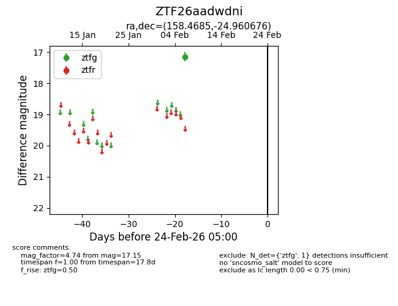
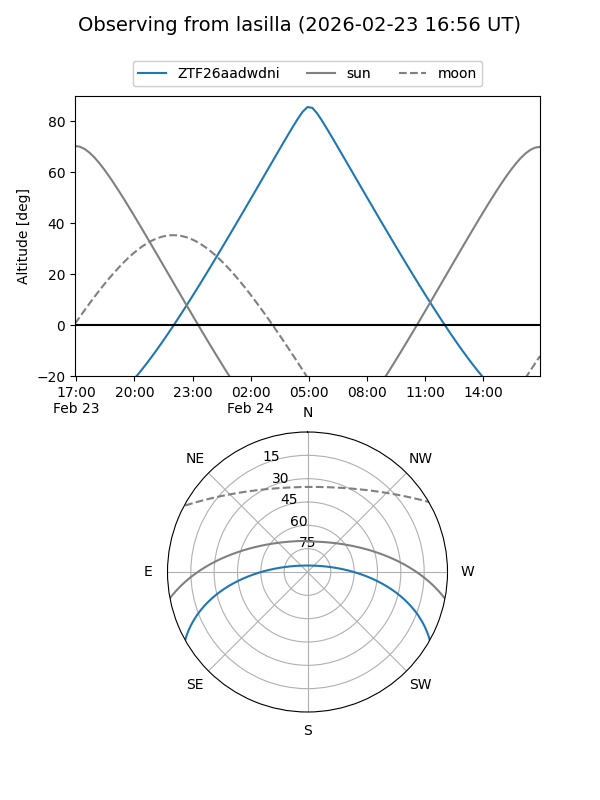
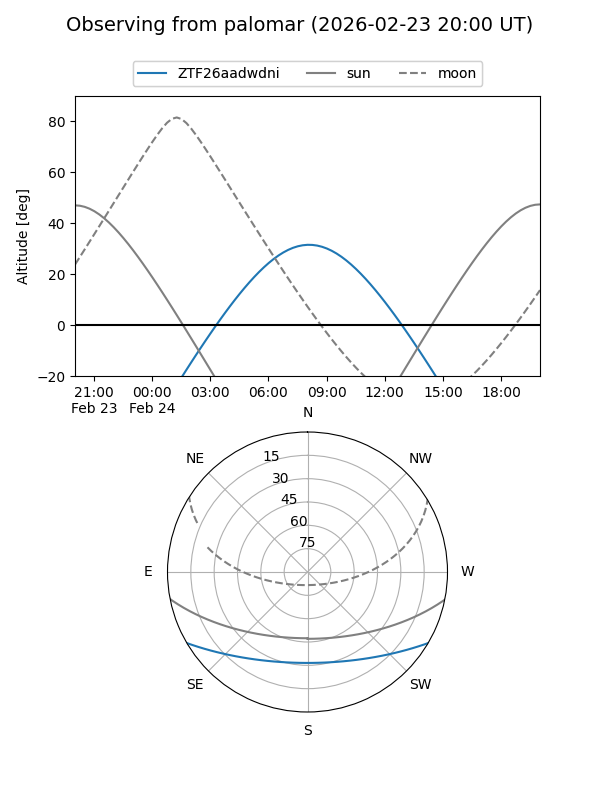

ZTF26aadwdni
Target ZTF26aadwdni at 2026-02-24 09:08
Aliases and brokers:
FINK: link
Lasair: link
ALeRCE: link
alt names
ZTF26aadwdni (ztf,fink_ztf)
Coordinates:
equatorial (ra, dec) = 158.4685,-24.96068
equatorial (HMS+DMS) = 10:33:52.44,-24:57:38.44
galactic (l, b) = (267.3864,+28.25525)
Flags:
Photometry:
last ztfg=17.15
1 ztfg detections
Lightcurve

Visibility


Additional plots